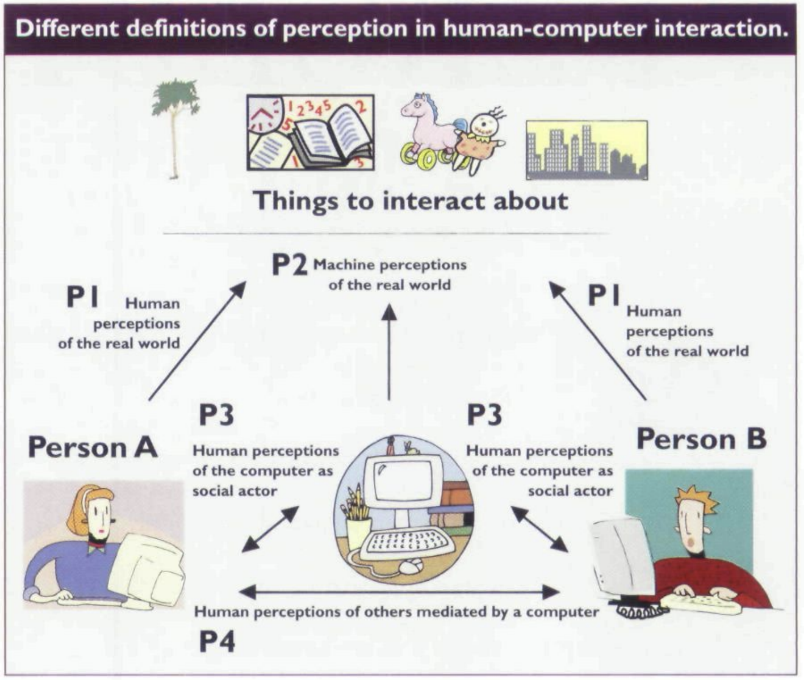

Research Areas
In the past few years, my primary research has been centering on the concepts of social cues and social presence in human-computer interaction and computer-mediated communication. I am especially interested in how various combinations of social cues evoke users’ social responses to social robotic technologies or technology-mediated social actors in VR or AR environments.
My research program generally focuses on four aspects:
[1] Testing the framework of the Computers are Social Actors (CASA) paradigm;
[2] Testing the framework of the Media are Social Actors paradigm as an extension of the CASA paradigm;
[3] Testing a framework about the categorization and interaction of social cues and social presence;
[4] Computational studies and media effects studies.
[1] Testing the Computers are Social Actors paradigm/the Media Equation:

Clifford Nass and his colleagues proposed the Computers Are Social Actors (CASA) paradigm in the 1990s and found that humans treat computers in some of the ways we treat humans. This first line of research applies this paradigm to explain more emerging technologies including social robots, chatbots, and other forms of AI-technologies. My coauthors and I use various methods (e.g., computational, systematic review, experiments) to test the validity of the paradigm and its concomitant counterarguments. (Picture credit: Reeves & Nass, 2000, perceptual user interfaces)
Relevant publications:
Xu, K., Liu, F., Mou, Y., Zeng, J., & Schafer, M. (2020). Using machine learning to learn machines: A cross-cultural study of users’ responses to machine-generated art works. Journal of Broadcasting and Electronic Media. PDF
Kim, J., Merrill, K., Xu, K., & Sellnow, D. (2020). My teacher is a machine: Understanding students’ perception of AI teaching assistants in online education. International Journal of Human-Computer Interaction, 36(20), 1902-1911. PDF
Wu, Y., Mou, Y., Li, Z., & Xu, K. (2020). Investigating American and Chinese subjects’ explicit and implicit perceptions of AI-generated artistic work. Computers in Human Behavior, 104, 106186. PDF
Mou, Y., Xu, K., & Xia, K. (2019). Unpacking the black box: Examining the (de)gender categorization effect in human-machine communication. Computers in Human Behavior, 90, 380-387. PDF
Mou, Y., Shi, C., Shen, T., Xu, K. (2019). A systematic review of the personality of robot: Mapping its conceptualization, operationalization, contextualization, and effects. International Journal of Human-Computer Interaction, 36(6), 591-605. PDF
Mou, Y. & Xu, K. (2017). The media inequality: Comparing the initial human-human and human-AI social interactions. Computers in Human Behavior, 72, 432-440. PDF
[2] Testing the Media are Social Actors paradigm:

The MASA paradigm is an extension and an attempt to update the CASA paradigm. To account for technological advances and to refine explanations for CASA results, my coauthors and I begin by distinguishing the roles of primary and secondary cues in evoking users’ social presence and social responses to technologies. We then discuss the roles of individual differences and contextual factors in these responses and unify mindless and mindful anthropomorphism as two major complementary mechanisms for understanding various MASA phenomena. Based on evolutionary psychology explanations for socialness, we conclude with nine formal propositions and suggestions for future research to test and apply MASA. The foundation for building the MASA paradigm is set upon the idea that being social means being interdependent and cooperative. Humans not only have a social brain and a social way of living, but also develop evolution-based flexibility to adapt to new human-computer interaction styles.

Relevant publications:
Lombard, M., & Xu, K. (corresponding author) (Accepted). Social responses to media technologies: The Media are Social Actors paradigm. Human-Machine Communication.
Xu, K. (2020). Language, modality, and mobile media use experiences: Social responses to smartphone cues in a task-oriented context. Telematics and Informatics, 48, 101344 PDF
Xu, K. (2019). First encounter with robot Alpha: How individual differences interact with vocal and kinetic cues in users’ social responses. New Media & Society, 21, 2522-2547. PDF
Lombard, M., Lee, S., Sun, W., Xu, K., & Yang, H. (2017). Presence theory. In P. Roessler, C. Hoffner, & L. Van-Zoonen (Eds.), International encyclopedia of media effects, pp. 1-13. Wiley-Blackwell. PDF
[3] Testing a framework about the categorization and interaction of social cues and social presence in the contexts of human-robot interaction, VR, and AR

Since the advent of computing machines, scholars have theorized about the relationship between humans and computers, how people interact with computers, how people interact with one another utilizing computers, and the implications of these machines for the society. Computer-mediated communication (CMC) and human-computer interaction (HCI) are two fields that have made important contributions in understanding the role of computers in communication. With the rise of new multimedia, multisensory, and interactive computing systems, this line of research suggests that theories from these fields need to be integrated to inform research about the new media environment. We first provide an overview of how CMC and HCI have evolved in the past few decades. Secondly, we propose a typology of how these fields have conceptualized key concepts like cues and social presence that can help researchers parse out ways of approaching new media technologies. Lastly, we examine several ways that new computing technologies including chatbots, computer agents, telepresence robots, and virtual/augmented reality illuminate a need to draw from both perspectives in the discourse regarding humans and computers.

Relevant publications:
Xu, K., & Liao, T. (2020). Explicating cues: A typology for understanding emerging media technologies. Journal of Computer-Mediated Communication, 25, 32-43. PDF
Liao, T., Yang, H., Lee, S., Xu, K., & Bennett, S. (2020). Augmented criminality: How people process in-situ augmented reality crime information in relation to space/place. Mobile Media & Communication, 8, 360-378. PDF
Xu, K., & Lombard, M. (2017). Persuasive computing: Feeling peer pressure from multiple computer agents. Computers in Human Behavior, 74, 152-162. PDF
[4] Computational studies and media effects studies.

While my primary focus has been centered on social robotics, virtual and augmented technologies, I have been interested in some other media-related phenomena such as binge-watching, location-based mobile social networks, globalization, visual analyses, and media dependency. Here I am listing some other research that concentrates on these topics.
Relevant publications:
Xu, K. (2018). Painting Chinese mythology: Varying touches on the magazine covers of Time, The Economist, Der Spiegel, and China Today. International Communication Gazette, 80, 135-157. PDF
Xu, K. (2018). Location speaks: Using GIS approach and Weibo check-in data to understand information communication in China. China Media Research, 14, 29-43. PDF
Steiner, E., & Xu, K. (2018). Binge-watching motivates change: How the uses and gratifications of streaming video viewers are challenging traditional audience research. Convergence: The International Journal of Research into New Media Technologies, 26(1), 82-101. PDF
Xu, K., Lin, M., & Haridakis, P. (2015). Being addicted to Chinese Twitter: Exploring the roles of users’ expected outcomes and deficient self-regulation in social network service addiction. China Media Research, 11(2), 1-16. PDF